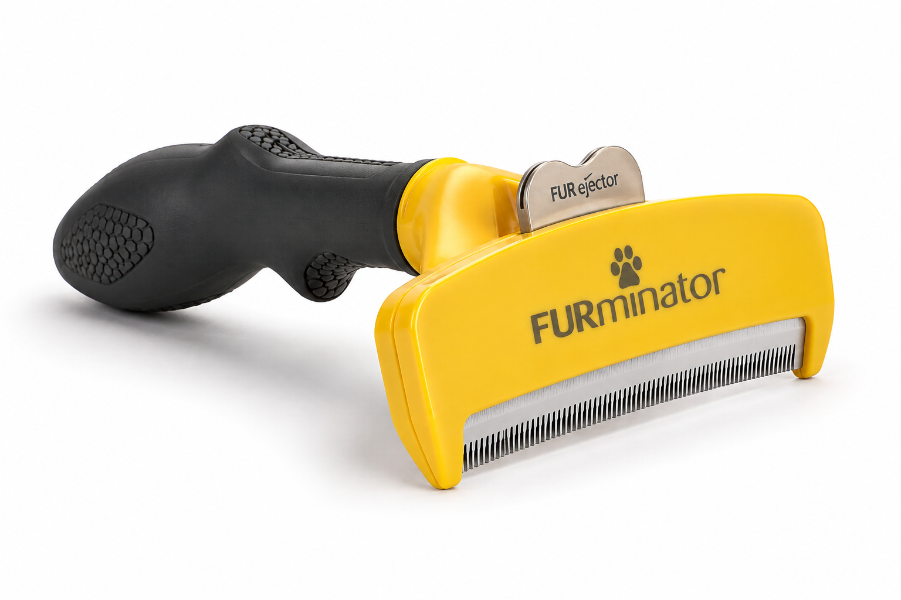

DOG BRUSH GUIDE
犬用ブラシ12商品を4種類で比較
まず「うちの子条件検索」で4種類すべてを横断して、合いやすいブラシ種類と商品候補を探せます。気になる種類が決まったら、4つの専門記事でその種類の商品だけをさらに比較できます。
ブラシTOPと4つの専門記事は役割を分けています。 このページは「4種類のうち何が合いやすい？」を探す入口。各専門記事では「その種類の中ならどの商品？」を条件検索できます。
12比較商品
4種類専門記事
1,000+公開口コミ母数
FIND FOR YOUR DOG
🐶 うちの子条件検索
毛の長さ・毛質・サイズ・悩みをポチッ。選ぶたびに、スリッカー・ピンブラシ・コーム・アンダーコート用の全12商品を横断し、候補TOP3と近い犬の体験談を更新します。
① 毛の長さ
② 毛質
③ サイズ
④ 気になること
🐾 この条件なら候補はこの3つ条件との相性候補
「絶対おすすめ1位」ではなく、公開体験と道具の用途を選んだ条件に照らした候補です。犬種が同じでも毛質・皮膚状態・ブラシの当て方で合い方は変わります。
🐕 近い条件の犬の体験談
4 SPECIALIST ARTICLES
4種類の専門記事
種類が決まったら、そのブラシだけを詳しく比較。各ページにも同じ「うちの子条件検索」があり、その種類の中から商品候補TOP3を探せます。

スリッカーブラシの実物例
スリッカーブラシ3商品比較｜毛玉・もつれ・巻毛・長毛スリッカー3商品を詳しく見る →

ピンブラシの形が分かる金属ピンブラシの実物例
ピンブラシ3商品比較｜日常ケア・長毛・ブラシ嫌いピンブラシ3商品を詳しく見る →

犬用コームの実物例
コーム3商品比較｜根元確認・仕上げ・顔や足まわりコーム3商品を詳しく見る →

アンダーコート用デシェッディングブラシのイメージ
アンダーコート用3商品比較｜ダブルコート・換毛期・抜け毛アンダーコート3商品を詳しく見る →
今回の調査ルール
口コミ件数は「母数」と「本文確認」を分けています。
レビュー欄に407件あっても「407件すべて読んだ」とは書きません。犬種・毛質・嫌がり方・低評価を個別に確認し、記事では確認できた具体例だけを要約しています。Amazonのカスタマーレビュー本文は記事根拠に使わず、楽天・Yahoo!・メーカー情報・公開SNSを中心にしました。
X（Twitter）は補助、Instagramは無理に使っていません。
Xではファーミネーターを使うゴールデン、オーストラリアンシェパード、柴犬などの公開投稿を確認。一方Instagramは検索エンジンから本文まで確認できる商品別の公開投稿が少なく、ログイン壁やPR投稿も多かったため、今回の評価点には入れていません。「Instagramも調べたが、証拠として使えるものだけ採用する」という扱いです。
写真について
このページでは、販売ページから商品画像を無断転載していません。ブラシの形を初めて見る人にも分かるよう、権利条件を確認できた写真を使用しています。アンダーコート用のみ、Amazonの正規商品画像が使えるようになるまでAI生成のイメージ画像を使用しています。
・スリッカー：Absintalsem「Slickerbrush horizontaal.jpg」/ Wikimedia Commons / CC BY-SA 4.0（未加工表示）
画像・ライセンス
・ピンブラシ参考：Klaus Post「Hairbrush with metal bristles.jpg」/ Wikimedia Commons / CC BY 2.0（未加工表示）。犬用品の商品写真そのものではなく、ピンブラシの構造を視覚的に説明する参考写真です。
画像・ライセンス
・コーム：Bordercolliez「Dog Comb.JPG」/ Wikimedia Commons / CC0 1.0
画像・ライセンス
・アンダーコート用画像：AI生成のイメージ画像（実在商品の公式商品写真ではありません）。Amazonの正規商品画像を利用できる段階で差し替える予定です。
このページでは、販売ページから商品画像を無断転載していません。ブラシの形を初めて見る人にも分かるよう、権利条件を確認できた写真を使用しています。アンダーコート用のみ、Amazonの正規商品画像が使えるようになるまでAI生成のイメージ画像を使用しています。
・スリッカー：Absintalsem「Slickerbrush horizontaal.jpg」/ Wikimedia Commons / CC BY-SA 4.0（未加工表示）
画像・ライセンス
{kind=link}
・ピンブラシ参考：Klaus Post「Hairbrush with metal bristles.jpg」/ Wikimedia Commons / CC BY 2.0（未加工表示）。犬用品の商品写真そのものではなく、ピンブラシの構造を視覚的に説明する参考写真です。
画像・ライセンス
{kind=link}
・コーム：Bordercolliez「Dog Comb.JPG」/ Wikimedia Commons / CC0 1.0
画像・ライセンス
{kind=link}
・アンダーコート用画像：AI生成のイメージ画像（実在商品の公式商品写真ではありません）。Amazonの正規商品画像を利用できる段階で差し替える予定です。
調査日：2026年9月1日。商品仕様・在庫・価格・レビュー件数は変動します。当サイト運営者が掲載商品をすべて実使用した記事ではありません。
← ブラシ総合案内へ